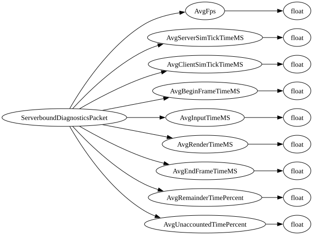

| Purpose: | Sent from the client to the server IF ProfilerLite is enabled AND the creator toggle for additional client telemetry is enabled AND new telemetry data is ready (every 500 ms). |
| Notes: |

| Field Name | Field Type | Field Constraints | Field Notes |
|---|---|---|---|
| AvgFps | float | ||
| AvgServerSimTickTimeMS | float | ||
| AvgClientSimTickTimeMS | float | ||
| AvgBeginFrameTimeMS | float | ||
| AvgInputTimeMS | float | ||
| AvgRenderTimeMS | float | ||
| AvgEndFrameTimeMS | float | ||
| AvgRemainderTimePercent | float | ||
| AvgUnaccountedTimePercent | float |